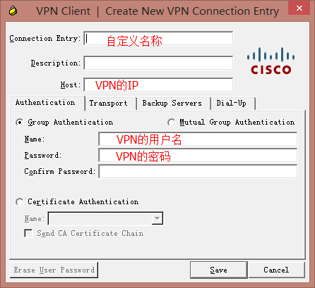
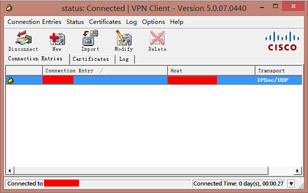

使用日本、美国的服务器，非常稳定的ipsec的VPN服务，跨PC、IOS、Android，仅10元/月。
开通VPN账号联系QQ276829513，QQ群号6719036
1.Alipay账户收款：lxtobe5@qq.com 打开www.alipay.com
2.Paypal账户收款：lxtobe5@gmail.com 打开www.paypal.com
Windows使用VPN教程
下载Cisco VPN Client和安装，打开Windows服务，关闭Internet Connection Sharing (ICS)这个服务，并设为手动启动，检查Cisco Systems, Inc. VPN Service这个服务，设为自动启动。
创建新的VPN连接方式

点击连接，直到连接成功

Android使用VPN教程
下载并安装VpnCilla，查看专业教程
IOS使用VPN教程
直接设置VPN